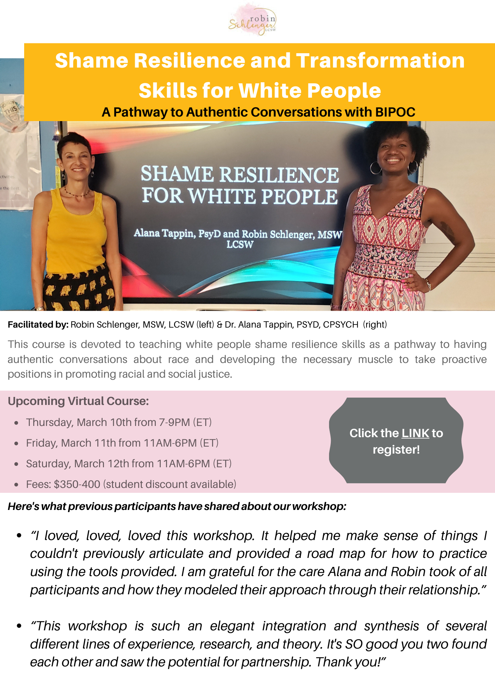
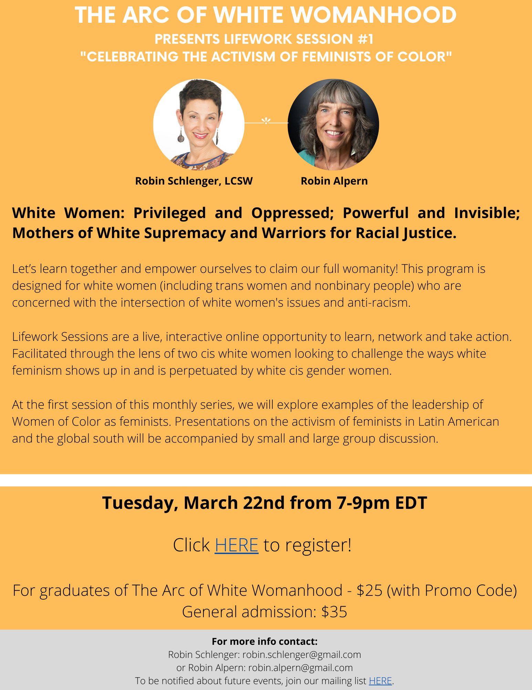
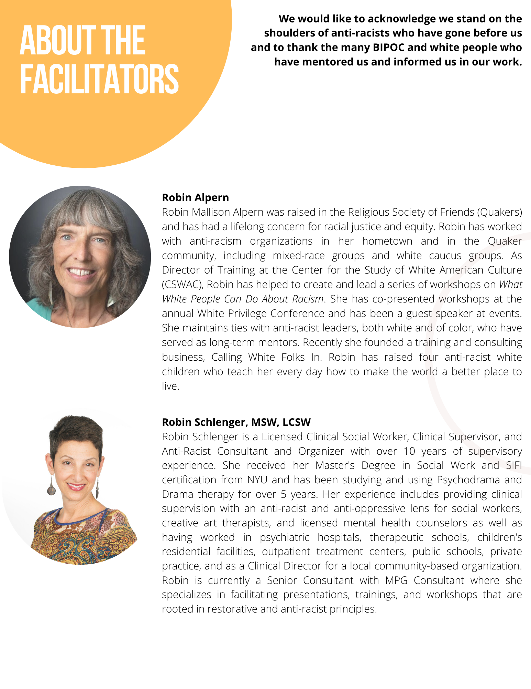

2022-02-28
Lets Honor Black History Month By Doing Our Work
As I think about Black History Month and how to best honor it and the lives and experiences of Black People, I am very aware of what I DON’T want to do. I don’t want to do anything that feels performative nor do I want to participate in virtue signaling what a woke white person I am (because I’m not). I asked myself, “how CAN I uplift and celebrate Black People and Black history in this blog in a way that feels authentic?”. I kept coming back to Dr. Hardy’s tips for being an ally (you can hear all of them and more in the video I’ve shared in the resource section). Dr. Hardy’s fourth tip states that “allyship is not about what one says or one's intentions. It is about what you are DOING and plan to do. It is a verb and means ongoing action. Allies must always be doing the work.”
This month, I am making the choice to use this platform to keep encouraging my white community to continue to educate ourselves and keep doing our work. Reflecting further on Dr. Hardy’s call to action, we need to continue to refine and strengthen our voices proactively and not just wait for the next incident to happen. We need to continuously engage in self-examination, interrogation and reflection. Doing our work is how we honor the lives of the Black People, whose backs we literally stand on. Doing our work is also how we honor and restore our own humanity. Below are some great resources to help you on your journey.
Warmly,
Robin
STARTS MARCH 10TH! A FEW VIRTUAL SEATS REMAINING - REGISTER TODAY.



The award-winning documentary “AFTERSHOCK” has been picked up by Disney’s Onyx Collective in partnership with ABC News and will stream onHulu, Disney+ and Star: https://www.aftershockdocumentary.com/. This film which premiered in the Sundance Film Festival features the stories of two families who lost loved ones to a racist maternal health system.
Embedded media (requires internet): //cdn.embedly.com/widgets/media.html?src=https%3A%2F%2Fwww.youtube.com%2Fembed%2FJ-jIoA1ggSU%3Fstart%3D2861%26feature%3Doembed%26start%3D2861&display_name=YouTube&url=https%3A%2F%2Fwww.youtube.com%2Fwatch%3Fv%3DJ-jIoA1ggSU&image=https%3A%2F%2Fi.ytimg.com%2Fvi%2FJ-jIoA1ggSU%2Fhqdefault.jpg&key=61d05c9d54e8455ea7a9677c366be814&type=text%2Fhtml&schema=youtube
Embedded media (requires internet): //cdn.embedly.com/widgets/media.html?src=https%3A%2F%2Fwww.youtube.com%2Fembed%2F1TpYUPL2bKg%3Ffeature%3Doembed&display_name=YouTube&url=https%3A%2F%2Fwww.youtube.com%2Fwatch%3Fv%3D1TpYUPL2bKg&image=https%3A%2F%2Fi.ytimg.com%2Fvi%2F1TpYUPL2bKg%2Fhqdefault.jpg&key=61d05c9d54e8455ea7a9677c366be814&type=text%2Fhtml&schema=youtube